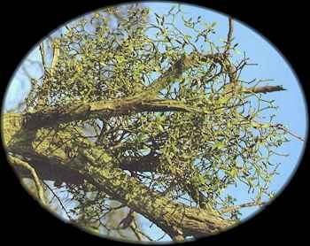

Mistletoe
Mistletoe 
The Golden Bough

Graves (1966) makes a case for an additional "blank" ogham, "the unhewn dolmen arch", which he assigns to the mistletoe, a plant for which there is abundant evidence of its ritual importance to the Celts. There are two common mistletoes in Europe, both of which live as parasites on trees. The common mistletoe (Viscum album L.) parasitizes many tree species, including oaks in the western part of its range. It forms white berries between Samhain and Yule. The yellow-berried mistletoe (Loranthus europaeus L.) does not extend to western Europe. It is found primarily on oaks. It is most likely the "golden bough", being more common in the eastern Mediterranean than the common mistletoe. The common mistletoe has been cultivated in North American for the Yule trade, and there are several native mistletoes in the genus Phoradendron. Mistletoes are in the Mistletoe family (Viscaceae). Curtis Clark